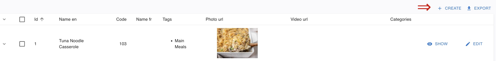
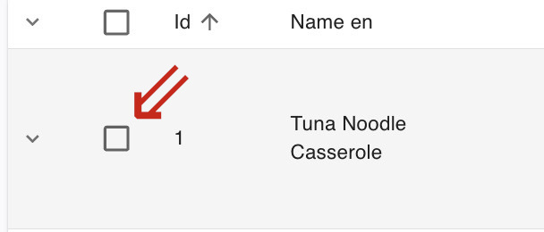
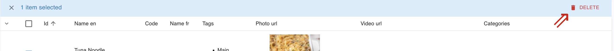

MealPlanner (GoodMealPlan) Website Documentation
Meals (Admin-Ui)
1.1 Creating a Meal
Overview
Creating a meal allows Admins to create new meals/recipes, which the users can view or add to their meal plan. To create a meal, please follow the steps below:
Steps to Create a Meal
-
Navigate to the Meal Plan Products Admin Page
- Open your web browser and go to GoodMealPlan If you're not already logged in, sign in to your account Once logged in, you'll be directed to the new page from left pane select products list. Note: You must be an Admin to create a Meal.
-
Select the Meal tab.
- Click the Meal tab on the top left sidebar of the admin-ui page of the MealPlanner app, similar to the screenshot below.
-
Click the Create button
- Click the
Createbutton in the top right part of the admin-ui page.
- Click the

- Add the Meal details and Create the Meal
- Enter the Name of the meal in English or/and French.
- Enter the Code for the meal.
- Enter the necessary tags for the Meal.
- Enter a relevant description for the meal in English or/and French.
- Select the relevant Categories (Breakfast/Lunch/Dinner/Snack) for the Meal.
- Enter a Photo and Video url or link for the meal.
- Enter the relevant Cook time, Prep time for the meal.
- Enter the Portions, Total cost, and the Serving cost for the meal.
- Enter the serving size unit and Nutrition rating for the meal.
- Enter the method description for the meal.
- Enter any relevant Tips for the meal.
- Click Save to Creat the Meal.

1.2 Viewing a Meal
Overview
Viewing a meal allows admin to view the necessary details about the meal. To view a meal, please follow the steps below:
Steps to View a Meal
-
Navigate to the Meal Plan Products Admin Page
- Open your web browser and go to GoodMealPlan If you're not already logged in, sign in to your account Once logged in, you'll be directed to the new page from left pane select products list.
-
Select the Meal tab.
- Click the Meal tab on the top left sidebar of the admin-ui page of the MealPlanner app, similar to the screenshot below.
-
Search for a meal by its name.
- On the Search column of the admin page for the MealPlanner app, search for the meal by its name.
-
View the Meal
- Click the drop-down arrow.
- Click the Show button to view the meal.
- Click the necessary tabs (Method, Summary, Nutrition and ingredients) if needed to view those sections of a meal.
1.3 Editing a Meal
Overview
Editing a meal allows the admin to change relevant specifications of a meal if needed. To edit a meal, please follow the steps below:
Steps to View a Meal
-
Navigate to the Meal Plan Products Admin Page
- Open your web browser and go to GoodMealPlan If you're not already logged in, sign in to your account Once logged in, you'll be directed to the new page from left pane select products list.
-
Select the Meal tab.
- Click the Meal tab on the top left sidebar of the admin-ui page of the MealPlanner app, similar to the screenshot below.
-
Search for a meal by its name.
- On the Search column of the admin page for the MealPlanner app, search for the meal by its name.
-
Edit the Meal
- Click the drop-down arrow.
- Click the Edit button to view the meal.
- Out of all available columns, make the necessary changes.
- Click the Save button in the bottom of the page to save the changes.
1.3 Deleting a Meal
Overview
Deleting a meal allows an admin to delete a meal if needed. To delete a meal, please follow the steps below:
Steps to View a Meal
-
Navigate to the Meal Plan Products Admin Page
- Open your web browser and go to GoodMealPlan If you're not already logged in, sign in to your account Once logged in, you'll be directed to the new page from left pane select products list.
-
Select the Meal tab.
- Click the Meal tab on the top left sidebar of the admin-ui page of the MealPlanner app, similar to the screenshot below.
-
Search for a meal by its name.
- On the Search column of the admin page for the MealPlanner app, search for the meal by its name.
-
Delete the Meal
- Click on the checkbox on the right side of the drop-down arrow
- Click the red-colored
Deletebutton on the top right of the admin page.


Additional Notes
For any questions or assistance, please contact your administrator